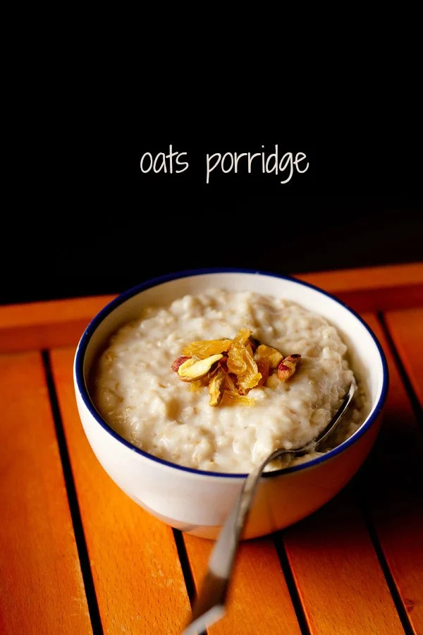
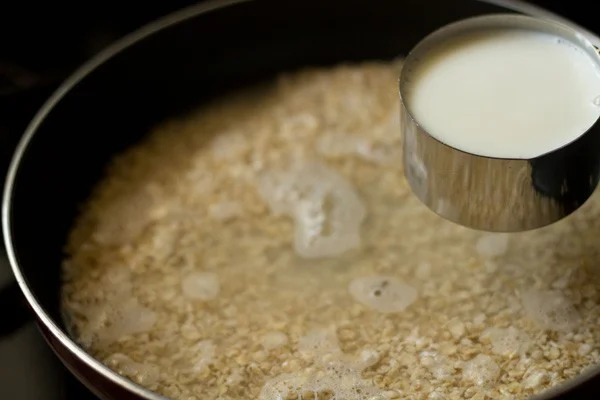
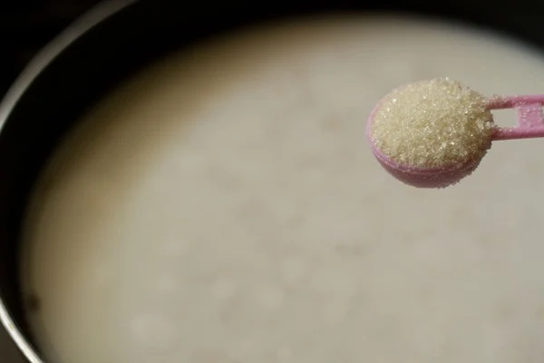
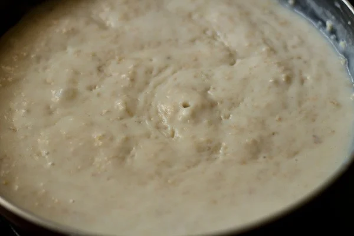
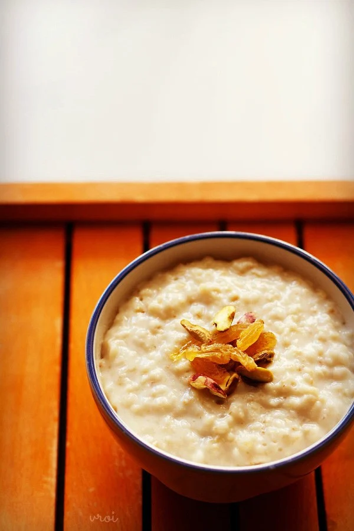

Oats Porridge Recipe | Oatmeal Porridge

Description
Oatmeal Porridge is a delicious breakfast staple that is easy and quick to prepare. And it is fantastic to customize!
Make it with water or milk or a combination of both and with either quick cooking oats or rolled oats (old fashioned oats).
Ingredients
These are the ingredients you’ll need to make this Oatmeal Porridge:
- Oats: quick-cooking oats or rolled oats
- Milk: ½ cup milk, or as desired
- Sugar: 2 tablespoons (or as desired) raw sugar or white sugar
Steps
- First, add ½ cup quick-cooking oats or rolled oats in a pan.
- Add 1 cup of water.
- Then add ½ cup milk or as needed. You can also add more water for a dairy-free recipe.

- Add sugar as per taste. I just added 2 tablespoons raw sugar or white sugar. Sugar is completely optional.
If adding fruits later, then you can skip sugar.

- Stir very well as you heat the oats porridge mixture on low to medium heat.
- Bring the oatmeal porridge to a gentle simmer as you continue to stir frequently.

- The porridge will thicken as it cooks. Continue to cook for a total of 5 to 6 minutes (if you have used quick cooking oats)
or until it reaches the consistency you like. For rolled oats, cook for 10 to 12 minutes on low to medium heat.
If the consistency is too thick for you add some more water or milk
- Turn off heat when the and the oats have softened well and you get the preferred consistency.
- Serve Oats Porridge hot or warm or at room temperature. Keep in mind that the Oatmeal Porridge will thicken as it cools.
